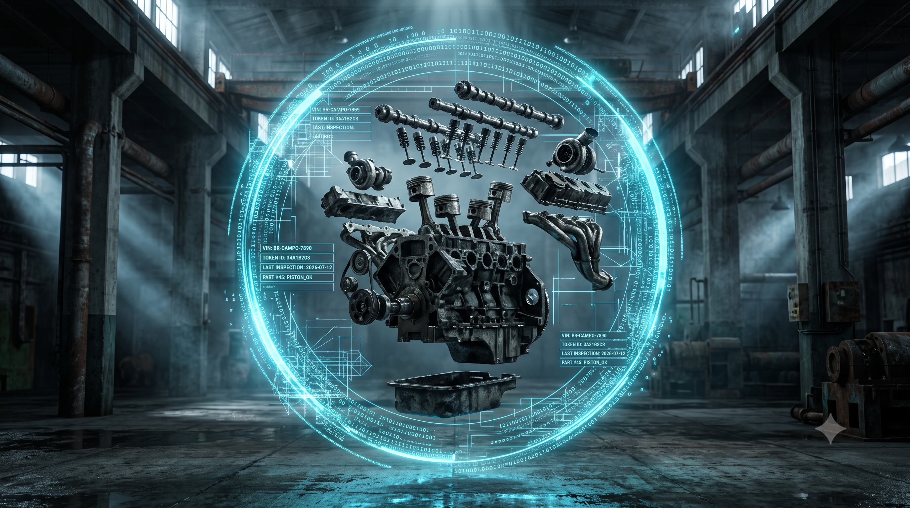

Módulo 04: O Laboratório Paraná
A Venda Atômica no Paraná (Ep. 04)

Por que esta aula importa para a sua jornada na Pós-Graduação?
Esta aula estuda a aplicação prática de transações sem papel no mercado físico de automóveis. Entender a tokenização do Detran-PR prepara você para a profissão de Arquiteto de Integração de Infraestrutura (ou "Despachante Digital"), ensinando onde estão os gargalos do mundo real, os lobbies burocráticos de R$ 3,28 milhões e como usar smart contracts para ligar o dinheiro inteligente (Drex) a bens físicos de forma segura e autônoma.
O que você precisa saber antes de continuar:
- A Pós-Graduação e o Mercado: Diferente de cursos puramente teóricos, nossa ementa foca em capacitar você a operar novas ferramentas regulatórias para estancar o vazamento de capital nos negócios.
- O Conceito de Token: Pense em um token como a "chave digital" de segurança que representa a escritura de propriedade de um carro na blockchain.
- A Venda Sem Intermediários: A meta desta aula é explicar como transferir um carro diretamente entre celulares, eliminando a idas a cartórios e taxas de despachantes.
Quando pensamos em inovações governamentais baseadas em blockchain (tecnologia de banco de dados imutável) no Brasil, o Paraná desponta como o principal laboratório em campo. Enquanto estados populosos ainda debatem projetos de lei burocráticos sobre integridade de dados, a Celepar (Companhia de Tecnologia da Informação e Comunicação do Paraná), em consórcio com o Tecpar (Instituto de Tecnologia do Paraná) e a startup Vetrii, estruturou a ParanaChain (rede pública estadual de registros digitais) — a infraestrutura dedicada a tokenizar propriedades físicas de forma definitiva.
O Passaporte Veicular Digital do Detran-PR não é apenas uma versão em PDF da antiga folha do CRLV (Certificado de Registro e Licenciamento de Veículo). Trata-se de um teste de estresse nacional da propriedade tokenizada (convertida em registro digital) rodando na prática, onde o DNA mecânico do carro funde-se com sua identidade civil digital na base de dados governamental.
No entanto, a simplificação burocrática prometida esbarra em entraves históricos de resistência corporativa. A verdadeira pergunta que o frotista e o empresário devem fazer não é se a tecnologia de chassi digital funciona, mas: por que o lobby dos cartórios físicos e despachantes tradicionais é o verdadeiro e mais caro obstáculo regulatório para o fim do papel no Brasil?
Tese — A Liquidação Atômica no Pátio de Vendas
A promessa do Passaporte Veicular Digital é eliminar as taxas exorbitantes e as idas físicas a cartórios, tabelionatos e despachantes. No modelo paranaense, cada chassi veicular é registrado sob a forma de um token de RWA (Ativos do Mundo Real — representações digitais de bens físicos) na ParanaChain, contendo o histórico imutável de sinistros, quilometragem certificada e gravames (restrições legais de transferência por dívidas pendentes) de bancos.
Isso permite a Liquidação Atômica Veicular:
- Transação Garantida: Quando você vende seu carro, você e o comprador assinam digitalmente o contrato inteligente (programa de computador autoexecutável) de transferência pelo celular. O comprador envia o Drex (a moeda oficial digital do Banco Central) para a rede, que só é depositado na conta do vendedor após o sistema registrar o veículo instantaneamente no nome do comprador no Detran-PR.
- DNA Digital Unificado: A história física do carro (como revisões oficiais carimbadas por oráculos — sistemas que validam e registram dados do mundo físico na rede — autorizados de concessionárias e vistorias cautelares) fica selada no código, inviabilizando fraudes clássicas de adulteração de quilometragem.
Antítese — O Lobby dos Intermediários Desapossados
Se o blueprint técnico do Paraná aponta para a eficiência absoluta, a transição para a produção em massa colide diretamente com forças corporativas e barreiras de fiscalização:
1. A Reação Política dos Cartórios
Os cartórios tradicionais e tabelionatos de notas faturam bilhões de reais anualmente com firmas reconhecidas, autenticações de documentos de venda e registros de gravames. Ao ver a tecnologia da ParanaChain realizar transferências de propriedade imutáveis em segundos e por frações de centavos, a reação foi imediata: lobby pesado nas comissões legislativas para exigir que a validação de identidade continue passando pela intermediação física de tabeliães, encarecendo a transação intencionalmente.
2. A Farsa do Oráculo Físico
Registrar o carro na blockchain garante que o documento digital é legítimo. Mas a tecnologia é impotente para impedir que o motor de um carro sinistrado e reformado de forma clandestina seja maquiado para passar pela vistoria off-chain (fora da rede digital, no mundo físico). Se o oráculo (a empresa de vistoria ou o sensor do pátio) for subornado ou falhar na leitura mecânica do chassi, a blockchain gravará uma mentira perfeita, dando fé pública digital a um ativo maquiado.
3. A Monopolização Tecnológica de Homologações
Ao credenciar apenas consórcios específicos (como Celepar/Tecpar/Vetrii) para rodar os nós validadores e homologar as APIs de oráculos, o governo cria um "monopólio da verdade". Startups menores e desenvolvedores locais queixam-se de barreiras de entrada regulatórias absurdas para se plugarem à ParanaChain, mantendo o controle sob as chaves de poucas corporações de tecnologia amigas do Estado.
Curiosidade Informativa: O Tamanho da Resistência
Você sabe qual é a ocupação com a maior renda e o maior patrimônio médio declarados no Brasil? Segundo dados oficiais da Receita Federal para o ano-exercício de 2026, os titulares de Cartórios (Tabeliães) lideram o ranking de forma esmagadora: registram um patrimônio médio de R$ 3,28 milhões e um rendimento anual líquido médio de R$ 2,80 milhões por CPF (cerca de R$ 233 mil mensais limpos). Embora esses números oficiais representem apenas o lucro líquido pessoal declarado (uma vez que o faturamento bruto dos grandes cartórios chega a dezenas de milhões de reais ao ano), o impacto na desigualdade é avassalador: em 2025, a renda média dos donos de cartório atingiu 17,2 vezes a média geral de rendimentos do país, superando com folga o topo do funcionalismo público (membros do Judiciário registram 8,8x e diplomatas 4,6x). Esse fluxo bilionário de caixa constante explica por que o lobby contra a automação do Drex é tão poderoso: a elite burocrática possui recursos quase ilimitados para financiar a perpetuação de seu monopólio.
Síntese — A Inevitabilidade dos Trilhos Digitais
O embate entre a eficiência da ParanaChain e a burocracia dos intermediários é um retrato clássico da destruição criativa. Cartórios podem atrasar a automação por meio de decretos, mas não conseguirão reverter a velocidade econômica que a liquidação atômica traz para seguradoras, frotistas e concessionárias de veículos. A brecha reside em projetar as pontas de oraculização para que os dados físicos cheguem de forma limpa à rede.
No próximo sábado, na nossa lição de apoio, explicaremos a mecânica por trás da integração entre tokens de veículos e redes de dados governamentais, desenhando cenários de exercícios interativos.
O que você deve levar deste episódio:
- O Passaporte Veicular Digital do Detran-PR testa na prática a liquidação atômica, reduzindo o tempo de transferência e os custos administrativos.
- O sistema é vulnerável a fraudes de oráculo físico, onde vistorias presenciais incorretas ou adulteradas podem alimentar a blockchain com informações falsas.
- O lobby dos cartórios tradicionais e o credenciamento monopolizado de poucas empresas retardam a descentralização tecnológica do sistema.
Contrato Inteligente (Smart Contract)
Um programa de computador autoexecutável gravado de forma imutável em uma rede descentralizada que executa automaticamente as cláusulas de um acordo assim que as condições combinadas são atingidas.
Drex
A representação digital oficial da moeda soberana brasileira (o Real), criada pelo Banco Central do Brasil para funcionar como um ecossistema inteligente de transações financeiras e contratos programáveis.
Gravame
Uma restrição legal ou ônus registrado sobre um bem (como a alienação fiduciária de um carro a um banco) que impede a sua transferência de propriedade até que a dívida associada seja totalmente quitada.
Liquidação Atômica
Uma operação financeira onde a transferência da posse de um ativo (ex: o documento digital do carro) e o pagamento em dinheiro ocorrem de forma simultânea e indissociável: ou ambas as ações se consolidam no mesmo segundo ou nenhuma delas ocorre.
Oraculação de Dados
O processo de capturar e validar informações que ocorrem no mundo físico (como a vistoria presencial do motor de um veículo) e registrá-las de forma estruturada em uma rede de dados de blockchain para alimentar contratos inteligentes.
ParanaChain
A rede pública estadual de registros digitais (blockchain permissionada) criada pelo governo do Paraná para tokenizar propriedades físicas (como veículos e imóveis) e conectá-las ao ecossistema do Drex.
Tokenização (ou Ativos Tokenizados / RWA)
O processo de converter direitos sobre um ativo real (como um carro, imóvel ou safra) em um registro digital seguro (token) dentro de uma rede de blockchain, facilitando sua divisão e transação rápida.
Vetrii
Startup de criptografia e tecnologia que auxiliou a Celepar e o Tecpar a desenhar a arquitetura técnica de tokenização e registros do Passaporte Veicular Digital na ParanaChain.
Vistoria Off-chain (Processo Fora da Rede)
Atividades, verificações físicas ou dados que ocorrem no mundo real analógico (fora dos computadores da blockchain), necessitando de validação externa para serem convertidos em registros digitais.
🧠 Pergunta-Guia de Reflexão para a Aula:
"Se a validação da propriedade física de um veículo é automatizada na rede digital (blockchain), mas a verificação do estado real do carro ainda depende de uma vistoria presencial (oráculo físico) sujeita a fraudes e subornos no mundo real, a blockchain garante de fato a segurança jurídica da venda atômica ou apenas formaliza digitalmente uma mentira analógica?"